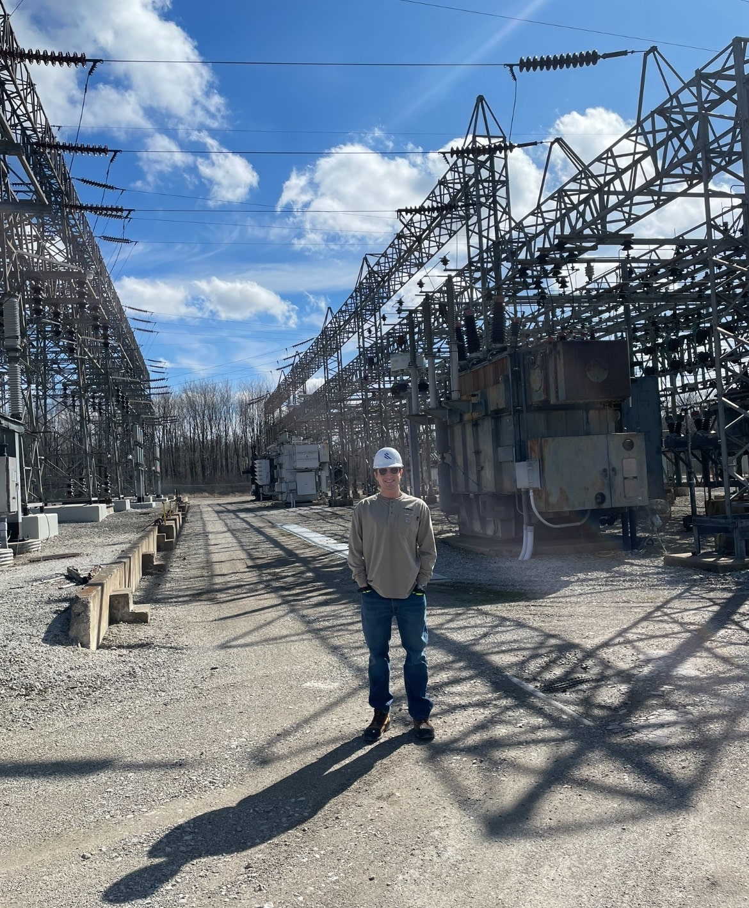
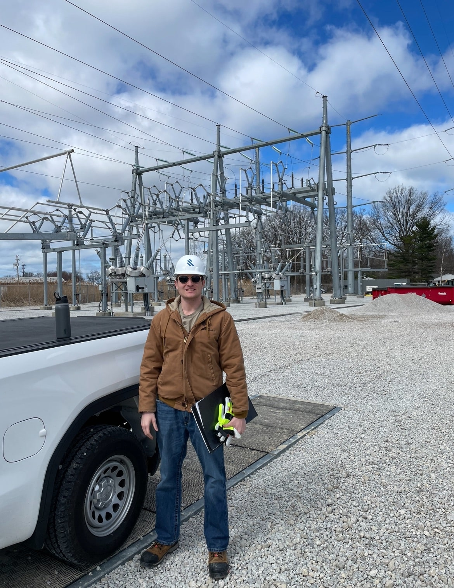
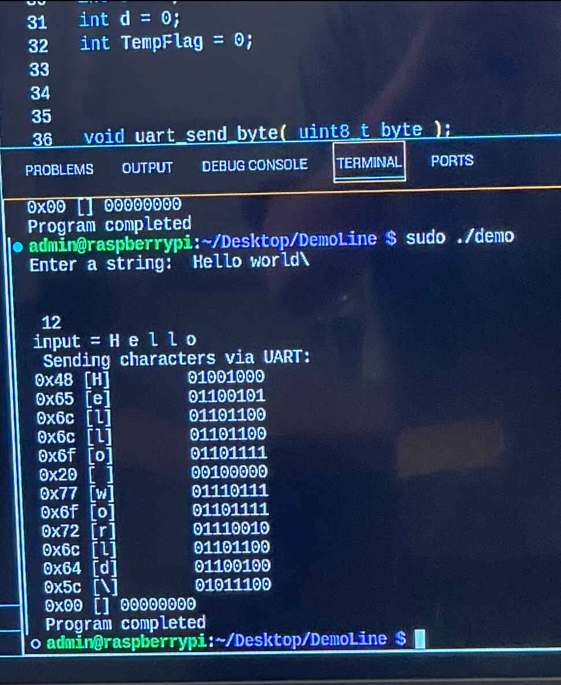
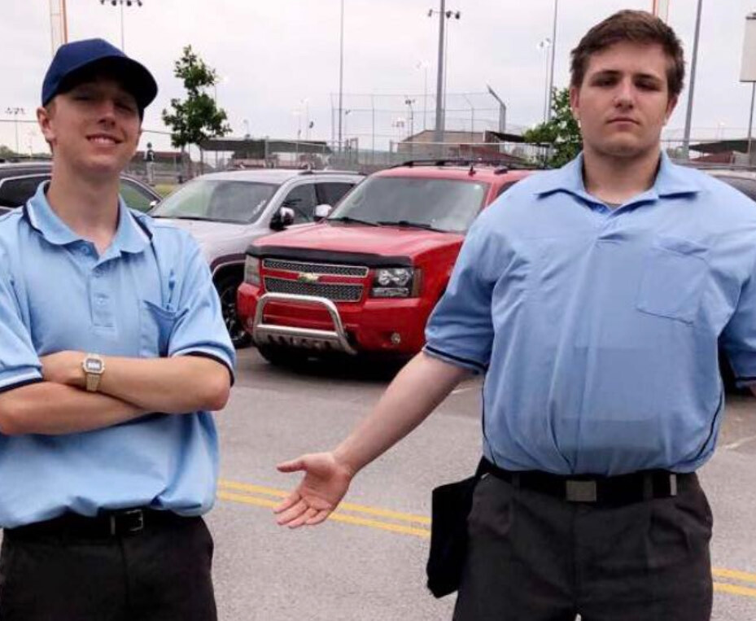

Project Highlights and General Info
This is my project page. In this page I will be showcasing three projects I have worked on over the years. The goal of this page is to give some brief examples of things I have worked on, and the skills I have developed.
| Company | Job Title | Time Employed |
|---|---|---|
| Burns & McDonnell | Electrical Engineer | June 2024 to Present |
| World Wide Technology | Cybersecurity Intern | May 2022 to November 2022 |
| Bentonville Youth Baseball | Head Umpire | March 2016 to May 2023 |
Project 1: Burns & McDonnell Scada Engineer
Starting in May 2024, I began working at Burns & McDonnell as an Electrical Engineer, completing network design and SCADA deliverable packages. In this role, I oversaw the installation of construction projects and created engineering deliverables to be used in the field. I reviewed other engineering packages and provided comments and advice on how to improve the electrical designs. I also programmed the devices once the engineering review and installation were completed. My most significant accomplishment was issuing over ten packages in the same week for construction, surpassing the previous record of six. As I reflect on this job, I realize I learned many valuable skills. Mainly, I developed leadership abilities by managing multiple construction projects and crews. I also sharpened my critical thinking skills, as I often had to think quickly and provide fast, accurate answers. Finally, I gained a deep understanding of safety controls. While safety is always emphasized, this role truly revolves around it. A faulty design could impact the power grid and potentially cause power outages. Without power, some people’s lives could be at risk.
 Project 2: Cyber security engineering intern at World Wide Technologies
Over the summer of 2022 I worked as a cyber security engineer at World Wide Technologies as In the summer of 2022, I worked as a Cybersecurity Engineer Intern at World Wide Technology. In this role, I oversaw multiple network systems and focused on improving internal network security. I achieved this by learning Linux and acting as a white-hat hacker, simulating real-world threats. I conducted DDoS attacks and used phishing techniques to test vulnerabilities and gain access to company files. Acting as a consultant, I presented my findings to clients and helped them understand the risks and solutions. My most significant accomplishment was creating a hacking lab hosted on our internal servers. This environment allowed employees to safely test new attacks without needing a live client environment. Upon reflection, I learned a great deal about corporate servers and networking devices. I also gained a solid understanding of best practices for keeping data secure. In today’s world, where companies often sell personal data, it's more important than ever to be aware of these risks and know how to protect yourself.
Project 3: Baseball umpire and trainer
From 2016 to 2024, I worked as a baseball umpire. Over my eight-season career, I advanced to the role of head umpire and umpire trainer. I coached new umpires on the rules of baseball and how to manage difficult situations with coaches. I officiated games both behind the plate and in the field. I also created training modules and led the seasonal rules conference. This role placed me in a position of leadership, allowing me to help develop and oversee our baseball league. Additionally, I umpired weekend tournaments for teams with players ranging in age from 8 to 18, covering both Little League and high school-level games. When I reflect, I realize this job taught me how to carry myself professionally. Baseball umpires are constantly in the spotlight, and I learned the importance of showing up and giving my best every single day. I also developed strong communication skills, learning how to use my voice and relay information clearly to both players and coaches. This job gave me the confidence to be the person I am today.
